Home
About
JAMILA TOMINES

For the Krigolson Lab at the University of Victoria, I gathered EEG data using Muse mobile EEG technology with MATLAB.
For Island Health, I was a Full Stack Developer and Business Analyst for the Department of Finance. I developed a site and created reports.
Inspired by the technical knowledge I learned as a fourth year Computer Science Student, I built and set up my own computer.